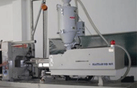

常见问题/helpMore>>
- 如何延缓塑料老化?
- 人们在使用塑料制品时，常常会遇到其发生变硬、变脆、变色、变裂以及性能降低等现象，这就是塑料老化……
- 如何延缓塑料老化?
- 人们在使用塑料制品时，常常会遇到其发生变硬、变脆、变色、变裂以及性能降低等现象，这就是塑料老化……
- 如何延缓塑料老化?
- 人们在使用塑料制品时，常常会遇到其发生变硬、变脆、变色、变裂以及性能降低等现象，这就是塑料老化……
行业资讯/NewsMore>>
- 
-
注塑机温升过高 五大危害全面分析
注塑机是塑料加工业中使用量最大的加工机械，不仅有大量的产品可用注塑机直接生产，而且还是组成注拉吹工艺的关键设备。在注塑过程中，许多企业都会发现注塑机有温升过高的现象，而这样其实对注塑机械设备是有很大伤害的，具体会带来……
- PET塑料知识简述[2015-05-01]
- 塑胶受力制品用原料选用原则[2015-05-01]
- 修理塑料注塑机的基本方法介绍[2015-05-01]
- 从成本和需求的角度分析塑料未来走……[2015-05-01]
- 减少塑料加工中的收缩知识[2015-05-01]
- 注塑机温升过高 五大危害全面分析[2015-05-01]